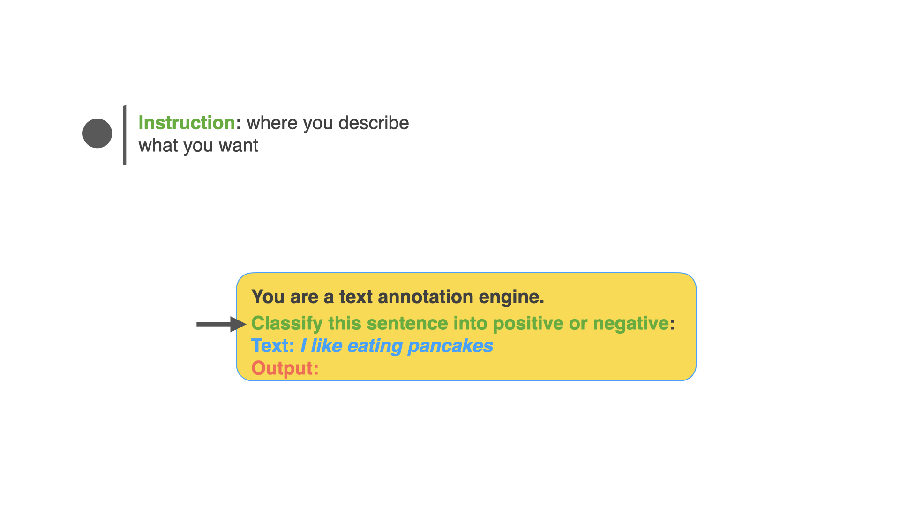
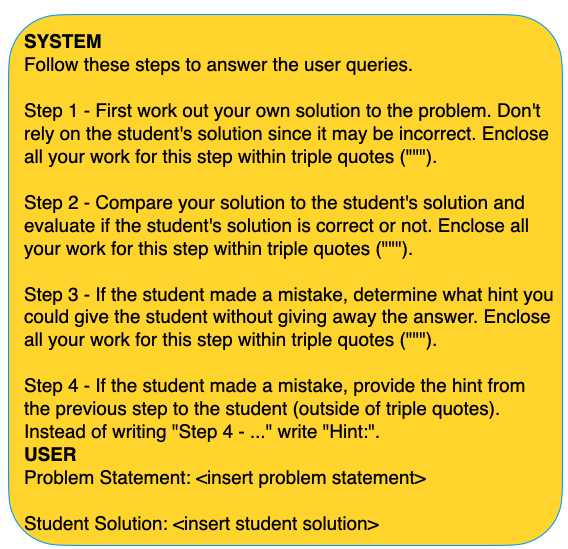

# Table of Contents ## Modules __1. Introduction to Prompt Engineering __ -- __2. Prompt Engineering Techniques__ -- __3. Prompt Engineering Experiments__ --- class: center, middle # Module #1 ## Introduction to Prompt Engineering --- # What is Prompt Engineering? -- - Prompt engineering: Discipline for engineering prompts -- - The goal is to __design good prompts__ -- - <span style="background-color: #FFDB58"> Process for developing prompts that yield high performance in a task. </span> --- # Why Prompt Engineering? -- - LLM's outputs are uncertain -- - We need a systematic approach for searching solutions to problems --- # What is a Prompt? -- - Prompt is text that conveys the user's intention to the LLM. -- - It can be a question, an instruction, request. --- # Prompt Basics ## Components of the prompt <img src="../notebooks/assets-resources/prompt-basics/prompt-basics.004.jpeg" width="800px" style="margin-left: -20px; margin-top: -40px;"> --- # Prompt Basics ## Components of the prompt: <span style="color: green">instruction</span>  --- # Prompt Basics ## Components of the prompt: <span style="color: green">instruction</span>, <span style="color: black">context</span> <img src="../notebooks/assets-resources/prompt-basics/prompt-basics.006.jpeg" width="800px" style="margin-left: -20px; margin-top: -40px;"> --- # Prompt Basics ## Components of the prompt: <span style="color: green">instruction</span>, <span style="color: black">context</span> <span style="color: #0d8eb9">input data</span> <img src="../notebooks/assets-resources/prompt-basics/prompt-basics.007.jpeg" width="800px" style="margin-left: -20px; margin-top: -40px;"> --- # Prompt Basics ## Components of the prompt: <span style="color: green">instruction</span>, <span style="color: black">context</span> <span style="color: #0d8eb9">input data</span> , <span style="color: red">output indicator</span> <img src="../notebooks/assets-resources/prompt-basics/prompt-basics.008.jpeg" width="800px" style="margin-left: -20px; margin-top: -40px;"> --- # Prompt Engineering Guide ## OpenAI's Guide for Building Good Prompts -- - __Strategy 1: Write clear instructions__ -- - <span style="color: red">Bad: </span> Who’s president? -- - <span style="color: green">Better:</span> Who was the president of Mexico in 2021? <p style="font-size: 14px; margin-top: 10px;"> <sup>[3]</sup><a href="https://platform.openai.com/docs/guides/prompt-engineering">OpenAI's Prompt Engineering Guide</a> </p> --- # Prompt Engineering Guide ## OpenAI's Guide for Building Good Prompts - __Strategy 2: Provide reference text__ -- <img src="../notebooks/assets-resources/prompt-strategy-2.png" alt="Prompt Strategy 2" style="width: 600px;"/> <p style="font-size: 14px; margin-top: 10px;"> <sup>[3]</sup><a href="https://platform.openai.com/docs/guides/prompt-engineering">OpenAI's Prompt Engineering Guide</a> </p> --- # Prompt Engineering Guide ## OpenAI's Guide for Building Good Prompts - __Strategy 3: Break tasks into subtasks__ -- <img src="../notebooks/assets-resources/prompt-strategy3.png" alt="Prompt Strategy 3" style="width: 600px;"/> <p style="font-size: 14px; margin-top: 10px;"> <sup>[3]</sup><a href="https://platform.openai.com/docs/guides/prompt-engineering">OpenAI's Prompt Engineering Guide</a> </p> ??? Use the youtube transcript example --- # Prompt Engineering Guide ## OpenAI's Guide for Building Good Prompts - __Strategy 4: Give the model time to think__ --  --- # Prompt Engineering Guide ## OpenAI's Guide for Building Good Prompts - __Strategy 5: Use external tools__ -- <img src="../notebooks/assets-resources/prompt-strategy5.png" alt="Prompt Strategy 5" style="width: 600px;"/> <p style="font-size: 14px; margin-top: 10px;"> <sup>[3]</sup><a href="https://platform.openai.com/docs/guides/prompt-engineering">OpenAI's Prompt Engineering Guide</a> </p> --- # Prompt Engineering Guide ## OpenAI's Guide for Building Good Prompts - __Strategy 6: Test changes systematically__ -- <img src="../notebooks/assets-resources/prompt-strategy6.png" alt="Prompt Strategy 6" style="width: 400px;"/> <p style="font-size: 14px; margin-top: 10px;"> <sup>[3]</sup><a href="https://platform.openai.com/docs/guides/prompt-engineering">OpenAI's Prompt Engineering Guide</a> </p> --- # Prompt Engineering Template - Define Your Task Clearly - Define the Eval Metric - Generate Candidate Prompts - Experiment - Learning When to Stop Experimenting --- # Define Your Task Clearly -- - Clear and concise ??? - Be clear about the end goal of the task. For instance, if the task is to summarize a paper, what kind of summary is needed? Is it an abstract-like summary, key points, or a layman’s terms explanation? -- - Progress should be measurable -- - Settle on scope and constraints ??? Scope and Constraints: Discuss any scope and constraints relevant to the task. For example, if the summary needs to be within a certain word limit or focus on specific sections of the paper. -- - Settle on your audience ??? Audience and Context: Mention who the intended audience is and the context in which the task is set. The way you’d summarize for experts in the field might differ from a summary intended for a general audience. -- ## Examples - <span style="color: red">__Bad__: </span> Summarize this paper -- - <span style="color: green">__Good__: </span> Summarize the main contributions of this paper in bullet points for a non-technical audience. --- # Define the Eval Metric -- - Establish criteria for evaluating the effectiveness of your prompts. -- - _What should I take into account when evaluating a prompt?_ -- - This could include accuracy, creativity, relevance, or other metrics pertinent to your task. -- - <span style="color: grey">Problem: classifying emails into urgent and not urgent </span> -- - Metric: Accuracy --- # Generate Candidate Prompts -- - Diverse set of prompts -- - Aiming for variety & creativity -- - Keep them as short as possible without losing information ??? Creativity and variety at this stage can lead to more robust findings later. --- # Experiment -- - **Test**: Run your candidate prompts through the intended system. -- - **Evaluate**: Assess the outputs based on your defined evaluation metrics. -- - **Compare**: Analyze the performance of each prompt against others. -- - **Best Candidate**: Determine which prompt(s) best fulfill your task requirements. -- - Tip: Utilize tools like Google Sheets for organized experimentation and tracking. --- # Learning When to Stop Experimenting -- - Recognize the balance between thorough experimentation and practical limitations. -- - Consider factors like: -- - **Token/Cost**: The expense associated with processing each prompt. -- - **Time/Urgency/Priority**: Available time and the urgency of the task. -- - Aim to avoid overengineering, as it can reduce the reusability and practicality of your solutions. --- # Summary - __Prompt Engineering__ is the discipline for engineering prompts - __Prompt Engineering__ aims to design prompts that yield high performance across tasks. - __OpenAI's Guide for Building Good Prompts__ includes strategies like writing clear instructions, providing reference text, breaking tasks into subtasks, giving the model time to think, using external tools, and testing changes systematically. - __Prompt Engineering Template__: task, metric, candidates, experiment --- class: center, middle # Module #2 ## Prompt Engineering Techniques --- # Prompt Engineering Techniques - Zero Shot Prompting - Few-shot Prompting - Chain-of-Thought (CoT) - Self-Consistency - Knowledge Generation - Tree of Thoughts (ToT) --- # Zero Shot Prompting -- - Zero-shot prompting is when you solve the task without showing any examples of what a solution might look like -- - One can use this as the first try at a model to see what kind of tasks LLM can already solve out of the box -- - <span style="background-color: yellow"> _ Classify the sentiment in this sentence as negative or positive: Text: I will go to a vacation. Sentiment:_ </span> --- # Few-Shot -- - Few-shot Prompting: technique where you show a few examples of what a solution might look like. -- - <span style="background-color: yellow"> Translate from English to French:</span> <span style="background-color: yellow"> - I am a student --> Je suis un étudiant</span> <span style="background-color: yellow">- I am a teacher --> Je suis un professeur</span> <span style="background-color: yellow"> - I am a doctor --> </span> -- - Example taken from (Brown et al. 2020) --- # Chain-of-Thought -- - Chain-of-thought (CoT) enables complex reasoning capabilities through intermediate reasoning steps (Wei et al. 2022). -- <span style="background-color: yellow"> Q: I have one sister and one brother. I am 20 years of age. My sister is 5 years older and my brother 2 years younger than my sister. How old is my brother? </span> -- <span style="background-color: yellow"> A: If I am 20 years of age and my sister is 5 years older, my sister is 20+5=25 years old. If my brother is 2 years younger than my sister, my brother is 25-2=23 years old. The answer is 23 years old. </span> -- <span style="background-color: yellow"> Q: I have 2 friends, Jack and Sally. Jack is 2 years older than Sally. Sally is 5 years younger than me. I am 17 years old. How old is Jack? </span> --- # Self-Consistency -- --- # Knowledge Generation -- - Knowledge Generation: Generating facts related to the question. -- - Knowledge Integration: Using generated facts to answer the question. -- --- # Techniques There are many more prompt engineering techniques that grow in complexity, such as: - ToT (Yao et al. 2023) - Retrieval Augmented Generation (Lewis et el. (2021)) - Automatic Prompt Engineer (Zhou et al., (2022)) - React Prompting (Yao et al., 2022) - Graph Prompting (Liu et al., 2023) - Skeleton of Thought (Ning et al. 2023) - Step Back Prompting (Zheng et al. 2023) --- # Summary - Zero-shot prompting: solve tasks without examples - Few-shot prompting: show a few examples of what a solution might look like - Chain-of-Thought: enables complex reasoning capabilities through intermediate reasoning steps - Self-Consistency: ensures that the model's outputs are consistent with the input - Knowledge Generation: generating facts related to the question - There are many more prompt engineering techniques that grow in complexity --- class: center, middle # Module #3 ## Prompt Engineering Experiments --- # Designing Prompt Engineering Experiments -- ## Evolving the Prompt Engineering Template - Task, metric, candidates, experiment, iterate -- - **Systematic approach** - Task specification strategies -- - Strategies for defining metrics -- - Strategies for prompt candidates generation -- - Strategies for experimentation --- # Task Specification Strategies - Writing prompts constrains continuation to task completion ??? So, when you write a prompt, you are not just asking the model to perform a task, but also defining how narrowly or broadly the model should interpret and respond to that task. Effective prompting is about finding the right balance between giving enough guidance to achieve the desired outcome without over-constraining the model, which might limit its ability to generate creative or comprehensive responses. -- - Few-shot and 0-shot: key jargon in prompt programming ??? 2 basic ways to prompt the model 0-shot prompts split into direct and proxy specifications "In zero-shot learning, we can further categorize our prompts into two types: direct and proxy. Direct prompts explicitly tell the model what to do, while proxy prompts guide the model more subtly, using analogies or indirect references." -- - 0-shot prompts split into direct and proxy specifications -- - **Direct**: Tells the model to perform a known task or construct a task from known components ??? "When we use a direct prompt, we are clearly defining what the model should do. For example, a direct prompt might be 'Summarize the article above.' Here, the model is explicitly instructed and knows the components of the task – it involves reading and summarizing.""Even within direct prompts, we use certain keywords or signifiers that hint at the expected behavior without laying out every detail. For instance, using the word 'summarize' already implies condensing information, focusing on key points, and omitting less important details." -- - Signifiers in direct specification key intended behavior without explicit instruction ??? "Proxy prompts use analogies or fictional characters to set the task. For example, asking 'How would Einstein approach this physics problem?' leverages our cultural understanding of Einstein as a proxy for analytical and innovative thinking." -- - **By proxy**: Uses analogies or characters as proxies for complex or nuanced intentions -- - Specification by proxy keys behaviors from cultural consciousness rather than direct naming ??? "This approach—specification by proxy—relies on shared cultural knowledge to guide the model's response, rather than straightforward commands. It draws on commonly understood symbols and figures, tapping into a deeper, sometimes more nuanced reservoir of context and expectations." -- - **By demonstration (n-shot)**: Effective for tasks requiring specific formats or instructive examples ??? "When we move to n-shot, or by demonstration, we provide multiple examples to show exactly how a task should be performed. This is particularly useful for tasks that require adherence to specific formats or styles, where examples serve as a clear template for the model to follow." -- - Constraining behavior to guide models towards intended continuations and avoid ambiguity ??? "Finally, the concept of constraining behavior is about carefully crafting our prompts to channel the model's responses in a specific direction. This helps prevent the model from veering off course or producing ambiguous outputs. It's about being clear and precise in our instructions to get the most relevant and accurate responses." --- # Strategies for defining metrics -- - __Clear objective__ -- - Understand and define the task unambiguously -- - __Specify criteria__ -- - Relevance, creativity, accuracy, fluency, coherence, etc. -- - __Measurable outcomes__ -- - Progress should be clearly measurable -- - __Systematic evaluation__ -- - Review Relevant Metrics: BLEU, ROUGE, METEOR, etc. -- - Task-Specific -- - Automated evaluation -- - __Iterative feedback!__ --- # Strategies for prompt candidates generation -- - __Field expertise + effective prompt generation strategies__ -- - Meta prompts -- - Prompt templates -- - Tooling: guidance, langchain, lmql, dspy, marvin, outlines, etc. -- - It's not about the tool! -- - It's about design patterns and best practices! --- # Strategies for experimentation -- - __LLM specificity, domain knowledge, and iteration__ -- - __Trial and error with measurable outcomes__ -- - __Systematic evaluation + iterative feedback__ --- class: center, middle <h1><span style="background-color: lightgreen"> Demo - Text Summarization Use Case </span></h1> --- class: center, middle <h1><span style="background-color: lightgreen"> Demo - Code Generation Use Case </span></h1> --- class: center, middle <h1><span style="background-color: lightgreen"> Demo - Q&A - Prompting to Understand Papers </span></h1> --- class: center, middle <h1><span style="background-color: lightgreen"> Demo - Designing Prompt Engineering Workflow </span></h1> --- # Summary - Evolving the Prompt Engineering Template - Task specification strategies - Strategies for defining metrics - Strategies for prompt candidates generation - Strategies for experimentation